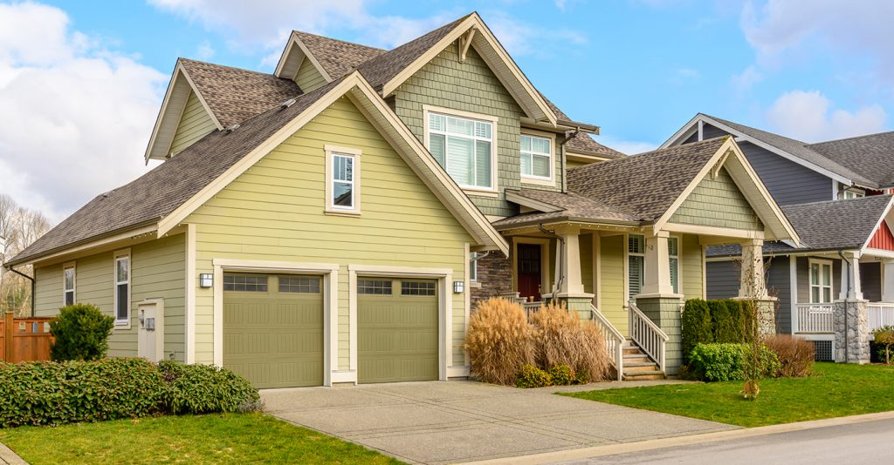

Zillow Rent Index (ZRI): A smoothed measure of the typical estimated market rate rent across a given region and housing type. ZRI, which is a dollar-denominated alternative to repeat-rent indices, is the mean of rent estimates that fall
into the 40th to 60th percentile range for all homes and apartments in a given region, including those not currently listed for rent. Details available in ZRI methodology. Zillow also publishes the Zillow Rent Forecast.

Dataset
Summary
Title: ZRI Time Series, Multifamily, SFR, Condo/Co-op ($) Source:https://www.zillow.com/research/data/ Publishing Department: Zillow Research Rows: 52 Columns: 90 Each row is a: US State License: Publicly available
Accessed:April 14, 2020
Details
The data for the visualizations has been sourced from the 311 Requests dataset from DataSF.
"This dataset includes cases generally associated with a place or thing (for example parks, streets, or buildings) and created July 1, 2008 or later. Cases generally logged by a user regarding their own needs (for example, property or business tax questions,
parking permit requests) are not included."
I am a Masters student in Computer Science at University of San
Francisco, with a strong background in Industrial Design from RISD. I'm from Mumbai, India and have lived in Providence, Seattle and San Francisco over the last 6 years. My hobbies
include music, fitness, photography and off lately, cooking